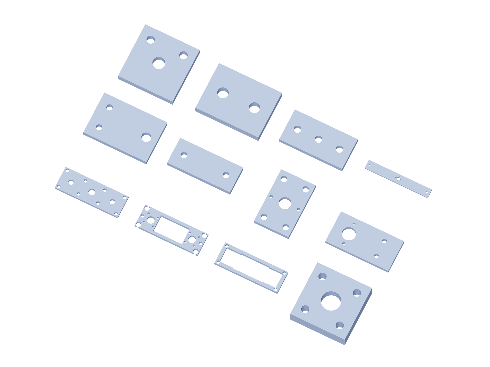

Kit / fabrication11 / 179
Metal kit / 5
6061 aluminum dimensions are finished blank sizes. Bought angles remain angles; shafts, bearings and guide blocks are separate purchased parts.

| Part | Qty | Finished blank / mm |
|---|---|---|
force-link-end | 12 | 110 × 38 × 6.35 |
force-link-shuttle | 6 | 110 × 38 × 6.35 |
force-link-shoulder | 12 | 110 × 38 × 6.35 |
force-shuttle-boss | 28 | 25.4 × 25.4 × 7.35 |
force-output-ear | 12 | 60 × 40 × 6.35 |
overload-switch-tab | 6 | 60 × 25 × 6.35 |
friction-spring-seat | 3 | 38 × 60 × 6.35 |
angular-clevis-cheek | 12 | 80 × 40 × 6.35 |
trunnion-inner-ear | 12 | 40 × 40 × 6.35 |
limit-stop | 12 | 40 × 30 × 6.35 |
bench-tether-anchor | 2 | 60 × 30 × 6.35 |
brake-torque-lever | 1 | 220 × 30 × 6.35 |
Use gun-positioner-drill-templates.pdf at actual size. The 3D STEP and registered projections govern formed angles and hub faces.